Summary:
Genero has introduced a form rendering system. Forms are not based on fixed text-mode screen, but can display complex layouts. In order to support .per files, the rendering system has to manage a character-based definition, which implies very specific graphical rules. This document explains the graphical rendering of a .per form.
Warning: Scrollgrid and Groups (without gridchildreninparent attribute) behave the same way as Grids.
The grid container is the most important container - it contains all ‘final’ widgets (fields, buttons…). The .per file defines a form which is character based; each character defines a cell of the grid:
GRID
{
First Name [fname ]
Last Name [lname ]
}
END
Above .per file layout specification can be show in a character grid as follows:
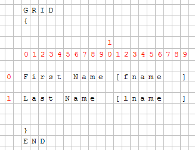
With a fixed-font based front end, there is no problem, but Genero introduced Windows look and feel and proportional fonts. Objects are then created and added to the grid; each object has a starting position (defined by posX and posY attributes) and the number of cells taken (gridwidth, gridheight attributes).
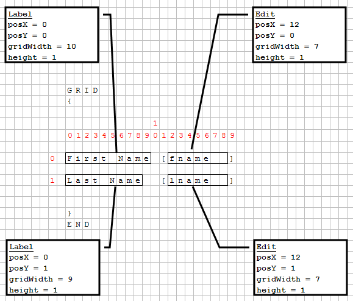
Front-ends grid layout follows these important rules:
The character set used to edit and compile .per form files is defined by the current locale. Form elements (typically, labels) can be written with non-ASCII characters of the current codeset. The next example shows a little .per file using labels in the French language:
GRID
{
Numéro de compte: [f001 ]
Intérêts: [f002 ]
}
END
The form element positions and sizes are determined by counting the width of characters, rather than the number of bytes identifying the characters in the current codeset. This rule can be ignored when using a single-byte character set such as ISO-8859-1 or CP-1252, where each character has width of 1 and codepoint of 1 byte. But this is important when using a multi-byte character set like BIG5 or UTF-8.
For example, in the UTF-8 multi-byte codeset, a Chinese ideogram is encoded with three bytes, while the visual width of the character is twice the size of a latin character. In the next example, the labels with three Chinese characters have the same width as the labels using six latin characters. As a result, the labels will get the same size (6 cells), and all fields will be aligned properly in the GUI form:
GRID
{
叽哱唶 [f001 ] abcdef [f002 ]
abcdef [f003 ] 叽哱唶 [f004 ]
}
END
Note however that it is recommended to write all .per files in ASCII codeset, and use Localized Strings to internationalize your forms.
Each widget's minimum size is computed according to its size and sizepolicy (rule #3); the size of cells of the grid is then computed (rule #1 and #2), and the widget's size can change to fill the cells (rule #4).
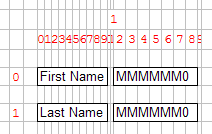 |
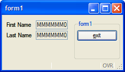 |
This Grid contains several fields.
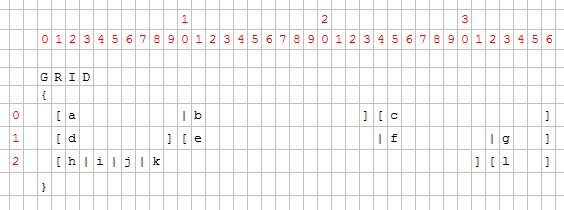
For each field, the position and the number of cells is computed by the form compiler. Then the front-end creates the widgets and sets them on the grid.
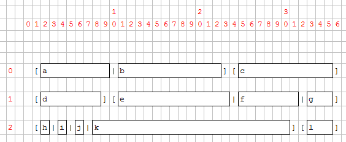
Once widgets are on the grid, their minimum size is computed according to their size and sizepolicy attributes. Then the grid cells are computed.
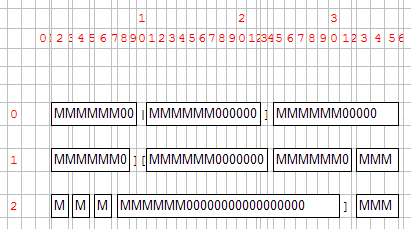
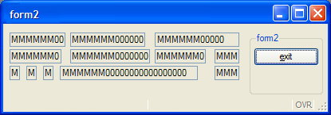
You can see that fields k and c are much bigger than expected:
Some fields are proportionally bigger than others because some parameters are variable, others fixed. Field width is computed as follows:
|
|
For example, a field of 1 will be as wide as 2 borders + 1 'M'. A field of 10 will be as wide as 2 borders + 6 'M' + 4 '0'. This means that a field of 1 is far from being 10 times smaller than a field of 10.
Rule 2 (the size of a cell depends on the size of the widgets inside the grid) is useful to keep text-mode alignment:
GRID
{
[a ]
[b ]
}
END
This .per implies that a and b start at the same position and have the same size, whatever a and b are.
This rule could lead to very different results, especially when a large widget is assigned into a small number of cells.
Example:
LAYOUT
GRID
{
[a|b ][f ]
[c|d] [e ]
}
END
END
ATTRIBUTES
CHECKBOX a = formonly.a, TEXT="A Checkbox";
EDIT b = formonly.b;
EDIT c = formonly.c;
CHECKBOX d = formonly.d, TEXT="Another Checkbox";
EDIT e = formonly.e;
EDIT f = formonly.f;
END
As seen previously, the grid will be computed regarding characters:
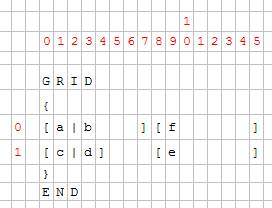
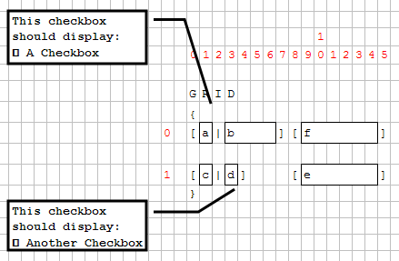
Then the minimum size of each widget and the layout is computed. Cells (0,1) and (1,3) contain a checkbox; these checkboxes will enlarge columns 1 and 3.
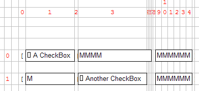
As Edit "c" is defined to have the same width as checkbox "a", it will be much larger as expected:
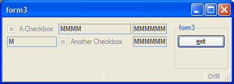
To avoid this “strange” result, the form designer should assign a realistic number of cells for each object:
GRID
{
[a |b
][f ]
[c|d
][e ]
}
Even if the LAYOUT section is wider, the result will be smaller:
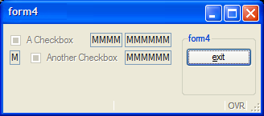
To get rid of the “character-based” grid, HBox Tags have been introduced. This mechanism defines a “widget container” that will gather the widget horizontally, like the HBOX layout container. All widgets inside this container are no longer dependent on the parent grid:
GRID
{
[a:b:c ]
[d|e|f ]
}
END
The notation “:” defines the HBox Tag. A container is created and will contain widgets a, b and c. These widgets won’t be aligned in the Grid:
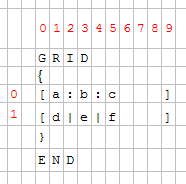
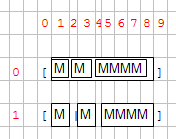
This mechanism is useful when you have large widgets in a small number of cells in one row and don’t want to have dependencies:
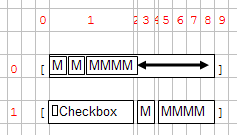
If we take the “form3” example again, and modify it with HBox Tags:
GRID
{
[a:b ][f ]
[c:d ][e ]
}
END
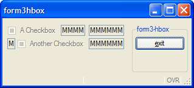
HBox tags also introduces the SpacerItems concept: when a grid HBox is created, the content may be smaller than the container:
Because of the checkbox, the cell 1 is very large, and then the HBox is larger than the three fields. A SpacerItem object is automatically created by the form compiler; the role of the SpacerItem is to take all the free space in the container. Then all the widgets are packed at the left.
By default, a SpacerItem is created at the right of the container, but the spacer can also be defined in another place:
GRID
{
[a :b :c ] <- default: spacer on the right
[ :d :e :f ] <- spacer on the left
[g : :h ] <- spacer between g and h
[i: :j: :k : :l ] <- multiple spacers (between i and j, j and k, k and l
}
END
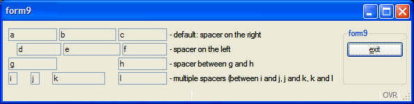
When you resize a window, the content will either grow with the window or be packed in the top left position. The rule followed by the front-end is that the grid is packed (horizontally / vertically / both) if nothing can grow in that direction.
The following widgets can grow horizontally:
x)x)The following widgets can grow vertically:
y)y)In general, a GRID can grow if any object inside the GRID can grow.
The exception to this rule: If there is only one GROUP (defined without the GRIDCHILDRENINPARENT attribute) inside a GRID and nothing else, the grid can grow.
This exception allows better rendering of a grouped grid:
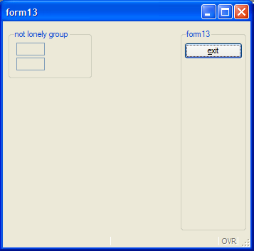
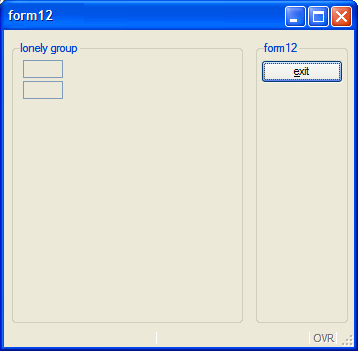
When using layout tags in a GRID container, the fglform compiler will automatically add HBox or VBox containers with splitter in the following conditions:
Stretchable elements are containers such as TABLEs, or form items like IMAGEs, TEXTEDITs with STRETCH attribute.
Warning: No HBox or VBox will be created if the elements are in a SCROLLGRID container.
The example below defines two tables stacked vertically, generating a VBox with splitter (note that ending tags are omitted):
01<T table1 >02[colA |colB ]03[colA |colB ]04[colA |colB ]05[colA |colB ]06<T table2 >07[colC |colD ]08[colC |colD ]
Below the layout defines two stretchable TEXTEDITs placed side by side which would generate an automatic HBox with splitter. Note that to make both textedits touch you need to use a pipe delimiter in between:
01[textedit1 |textedit2 ]02[ | ]03[ | ]04[ | ]
For more details, see Layout Tags in the Form Specification File page.